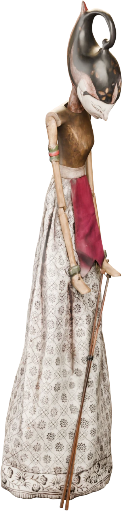
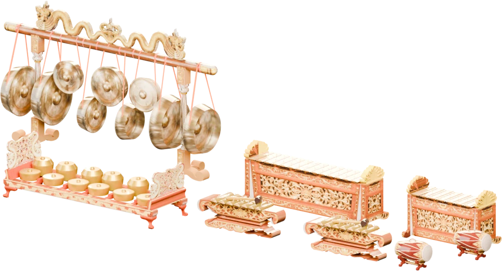
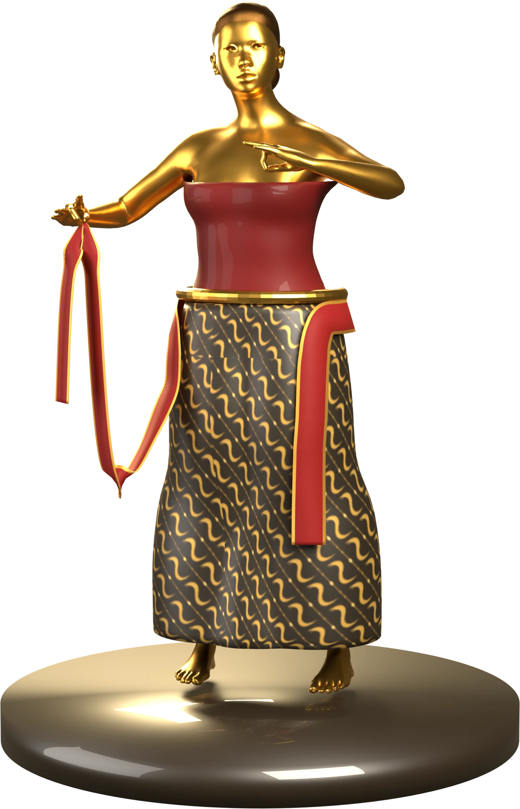
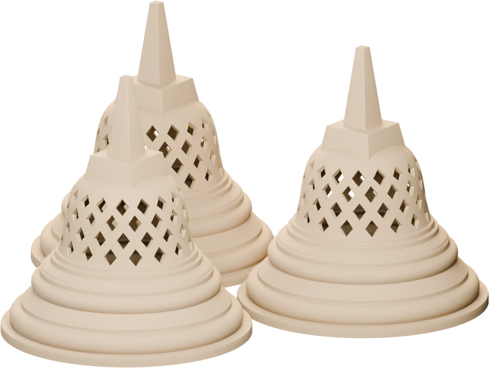
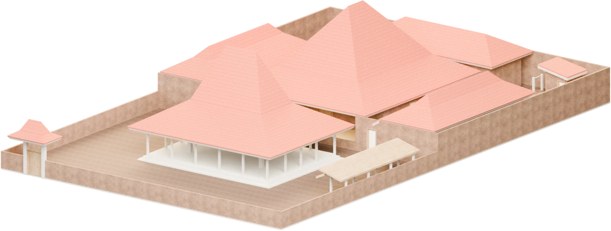

Gerak ukel, seblak sampur, dan gedrug selama ini diajarkan langsung dari maestro ke murid. Video hanya merekam tampak luar; sudut sendi dan tempo halus sering hilang.
NaraMotion merekam gerak itu sebagai data tiga dimensi, sehingga bisa disimpan, dipelajari ulang, dan dibandingkan.

Arjuna

Gamelan
Enam tari dalam arsip demo
GambyongSurakarta
Bedhaya KetawangKeraton Surakarta
SerimpiYogyakarta & Surakarta
PendetBali
JaiponganJawa Barat
RemoJawa Timur
Tim pengembang
Orang-orang di balik NaraMotion
SMANSA
Kim Arumi Malika Putri Afra Na’ila Arkana Anyaila Wahyu
Studio berjalan di peramban dengan data sensor simulasi, jadi bisa dicoba tanpa perangkat. Daftar dengan email atau akun Google.
Coba Studio sekarangnaramotion.web.app
Model 3D Sketchfab (dirender ulang dengan pencahayaan baru): “Arjuna — Wayang Golek theatre puppet” oleh Virtual Museums of Małopolska (CC0); “GAMELAN JAWA” oleh eventdesignws (CC BY 4.0); “Borobudur temple” oleh giga (CC BY 4.0); “Rumah Joglo Jawa” oleh mokhammadsoni (CC BY 4.0) — sketchfab.com. Penari, ikon, dan batik dibuat oleh tim NaraMotion. Data gerak: Hendrawan dkk., Video Dataset of Woman/Male Basic Balinese Dance Movement (Mendeley Data, CC BY 4.0); AIST++ (Li dkk., ICCV 2021, CC BY 4.0); Turkish Folk Dance IMU (berkaykarakis, CC BY 4.0).
꧁ ꦤꦫ ꧂
NaraMotion
Motion capture 9-DoF untuk tari Nusantara

Merekam gerak tari dalam tiga dimensi, menyimpannya sebagai arsip digital, dan mengajarkannya kembali kepada siswa.
Sensor · Fusi · AI · Arsip
Cara kerja
Dari gerak ke arsip dalam empat tahap
I
Pasang sensor
Sepuluh node di kepala, badan, lengan atas dan bawah, paha, dan betis, tersembunyi di balik kostum.
II
Fusi sensor
Filter Madgwick menggabungkan sembilan sumbu menjadi kuaternion orientasi tiap segmen, 100 kali per detik.
III
Analisis AI
Model sekuens mengenali ragam gerak, lalu membandingkan gerak siswa dengan gerak maestro.
IV
Arsip & kelas
Gerak disimpan sebagai arsip. Siswa berlatih dan menerima skor serta saran per sendi.
Perangkat keras
Sensor 9-DoF MARG
Modul GY-85: tiga sensor, masing-masing tiga sumbu.
Akselerometer
ADXL345 · ±16 g
Kemiringan segmen dan hentakan kaki.
Giroskop
ITG-3205 · ±2000 °/s
Gerak putar cepat dan halus seperti ukel.
Magnetometer
HMC5883L / QMC5883L
Kompas: arah hadap penari tidak bergeser.
Satu node, ×10
ESP32-C3 Super Mini
Sensor 9-DoF GY-85
Layar status OLED
Li-Po pipih 1000 mAh
Modul cas USB-C
Aplikasi
Tiga ruang kerja
Studio Rekam
Avatar penari bergerak dari data sensor, grafik 9 sumbu per node, dan rekam sesi.
Kelas Tari
Kamera AI mengenali 24 gerak dasar tari Bali, menilai tiap sendi, dan memberi saran.
Arsip Nusantara
Data tari dari Jawa, Bali, dan daerah lain beserta sesi rekaman.


Borobudur dan joglo: ruang budaya tempat tari tumbuh.